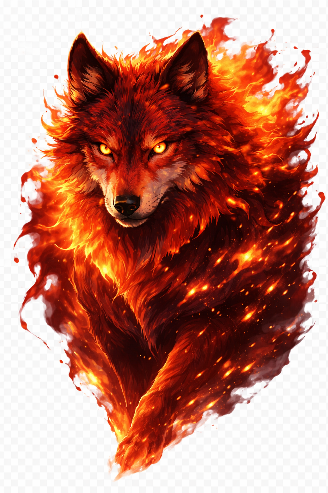

Merhaba, ben
Modern web uygulamalarının arkasında çalışan güçlü backend sistemleri geliştiriyorum. Temiz ve sürdürülebilir kod yazmaya, güvenli ve ölçeklenebilir mimariler oluşturmaya önem veriyorum. Amacım, kullanıcıların fark etmese bile sorunsuz çalışan hızlı ve güvenilir sistemler oluşturmak.
